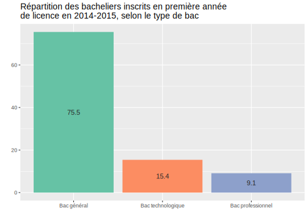
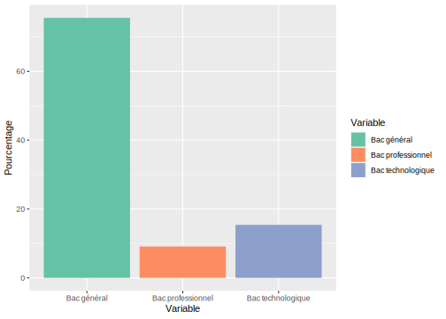
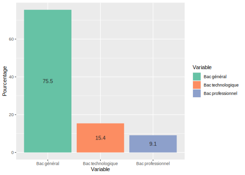

Section 7 (reprise de l’)Analyse descriptive
7.1 Caractéristiques de la cohorte des bacheliers 2014 inscritsen première année de licence en 2014-2015
On peut maintenant revenir sur notre analyse et utiliser la fonction TAB() créée pour construire notre tableau final.
tab1 <- TAB(PassageL1L2, var1=type_bac, var_sum=effectif_neobacheliers_passage)
tab2 <- TAB(PassageL1L2, var1=serie_bac_lib, var_sum=effectif_neobacheliers_passage)
tab3 <- TAB(PassageL1L2, var1=mention_bac_bis, var_sum=effectif_neobacheliers_passage)
tab4 <- TAB(PassageL1L2, var1=age_bac, var_sum=effectif_neobacheliers_passage)
tab5 <- TAB(PassageL1L2, var1=sexe_lib, var_sum=effectif_neobacheliers_passage)
# vu que c'est notre dernière table, on va ajouter le total:
tab6 <- TAB(PassageL1L2, var1=gd_discipline_lib,
var_sum=effectif_neobacheliers_passage) %>%
adorn_totals("row")
Tabfinal <- rbind(tab1, tab2, tab3, tab4, tab5, tab6)
Tabfinal %>% gt()| Variable | Effectif | Pourcentage |
|---|---|---|
| Bac général | 120643 | 75.5 |
| Bac professionnel | 14527 | 9.1 |
| Bac technologique | 24596 | 15.4 |
| BAC ES | 46424 | 29.1 |
| BAC L | 31089 | 19.5 |
| BAC professionnel | 14527 | 9.1 |
| BAC S | 43130 | 27.0 |
| BAC STMG | 13959 | 8.7 |
| BAC technologique hors STMG | 10637 | 6.7 |
| Très bien | 7253 | 4.5 |
| Bien | 19856 | 12.4 |
| Assez bien | 44192 | 27.7 |
| Passable | 83503 | 52.3 |
| Inconnue | 4962 | 3.1 |
| A l'heure ou en avance | 107393 | 67.2 |
| En retard | 37846 | 23.7 |
| Non pris en compte | 14527 | 9.1 |
| Femme | 94697 | 59.3 |
| Homme | 65069 | 40.7 |
| Droit, gestion, économie, AES | 53076 | 33.2 |
| Lettres, langues et sciences humaines | 65514 | 41.0 |
| Santé | 21 | 0.0 |
| Sciences et sciences de l'ingénieur | 26971 | 16.9 |
| STAPS | 14184 | 8.9 |
| Total | 159766 | 100.0 |
Cela nous donne donc un tableau qu’il reste à mettre en forme pour qu’il puisse être utilisé dans un rapport. Comme évoqué précédemment, j’utilise pour cela le package gt, mais d’autres packages existent… Vous trouverez des informations sur les diverses options de ce package ici ou un tutoriel là ou encore là.
On peut ainsi ajouter des sections pour bien distinguer nos différentes variables, puis ajouter un titre et une légende, ou encore mettre en gras certains noms du tableau, etc. Au final, cela donne ça :
Tabfinal %>% gt() %>%
fmt_number(columns = "Effectif", sep_mark = " ", decimals = 0) %>%
tab_row_group(label=md("**Total**"), rows=25) %>%
tab_row_group(label=md("**Discipline de la licence suivie**"), rows=20:24) %>%
tab_row_group(label=md("**Sexe**"), rows=18:19) %>%
tab_row_group(label=md("**Âge au bac**"), rows=15:17) %>%
tab_row_group(label=md("**Mention au bac**"), rows=10:14) %>%
tab_row_group(label=md("**Série plus précise du bac**"), rows=4:9) %>%
tab_row_group(label=md("**Type de bac**"), rows=1:3) %>%
tab_header(title=md('**Caractéristiques des bacheliers 2014 inscrits en 2014-2015 en
première année de licence**')) %>%
cols_label(Variable = " ", Effectif = md('**Effectif**'), Pourcentage = md('**Pourcentage**')) %>%
tab_source_note(source_note = html("Source : Open-data ESR.<br>Champ : Bacheliers 2014 inscrits en première année de licence (hors licence professionnelle) dans l’enseignement supérieur public en 2014-2015.<br>Traitement des données : Camillle Signoretto"))| Caractéristiques des bacheliers 2014 inscrits en 2014-2015 en première année de licence | ||
|---|---|---|
| Effectif | Pourcentage | |
| Type de bac | ||
| Bac général | 120 643 | 75.5 |
| Bac professionnel | 14 527 | 9.1 |
| Bac technologique | 24 596 | 15.4 |
| Série plus précise du bac | ||
| BAC ES | 46 424 | 29.1 |
| BAC L | 31 089 | 19.5 |
| BAC professionnel | 14 527 | 9.1 |
| BAC S | 43 130 | 27.0 |
| BAC STMG | 13 959 | 8.7 |
| BAC technologique hors STMG | 10 637 | 6.7 |
| Mention au bac | ||
| Très bien | 7 253 | 4.5 |
| Bien | 19 856 | 12.4 |
| Assez bien | 44 192 | 27.7 |
| Passable | 83 503 | 52.3 |
| Inconnue | 4 962 | 3.1 |
| Âge au bac | ||
| A l'heure ou en avance | 107 393 | 67.2 |
| En retard | 37 846 | 23.7 |
| Non pris en compte | 14 527 | 9.1 |
| Sexe | ||
| Femme | 94 697 | 59.3 |
| Homme | 65 069 | 40.7 |
| Discipline de la licence suivie | ||
| Droit, gestion, économie, AES | 53 076 | 33.2 |
| Lettres, langues et sciences humaines | 65 514 | 41.0 |
| Santé | 21 | 0.0 |
| Sciences et sciences de l'ingénieur | 26 971 | 16.9 |
| STAPS | 14 184 | 8.9 |
| Total | ||
| Total | 159 766 | 100.0 |
| Source : Open-data ESR. Champ : Bacheliers 2014 inscrits en première année de licence (hors licence professionnelle) dans l’enseignement supérieur public en 2014-2015. Traitement des données : Camillle Signoretto |
||
Les tableaux construits précédemment vont nous servir à réaliser des graphiques, qui sont davantage utilisés dans des présentations pour mieux visualiser les résultats qu’un tableau de statistiques descriptives. Les possibilités offertes par le package ggplot sont importantes et c’est pour cela que nous l’utiliserons en priorité.
Par exemple, pour le type de bac, on peut construire un graphique en bâtons avec geom_bar() :
- en présentant les colonnes de manière décroissante selon le pourcentage, en utilisant
fct_reorder()(vue précédemment) dans une étape préalablemutate(); - en ajoutant des couleurs aux barres pour éviter le gris par défaut un peu terne, en utilisant par exemple la librairie
RColorBrewer(vous pouvez regarder le type de palettes, notamment celles compatibles pour les daltoniens) et la palette “Set2” ; il faut pour cela indiquer l’optionfill=, puisscale_fill_brewer(); - en ajoutant la valeur des pourcentages à l’intérieur des colonnes, avec l’ajout de
geom_text(); - et enfin, en ajoutant un titre, et en supprimant la légende qui n’est pas utile ici (car option
fill=dans l’aes).
Cela donne alors ce graphique :
library(RColorBrewer)
#Pour voir le type de palettes disponibles dans ce package :
#display.brewer.all(colorblindFriendly = TRUE)
tab1 %>%
mutate(Variable = fct_reorder(Variable, desc(Pourcentage))) %>%
ggplot() + aes(x=Variable, y=Pourcentage, fill=Variable) +
geom_bar(stat = "identity") +
geom_text(aes(y=Pourcentage, label=Pourcentage), position = position_stack(vjust = 0.5),
color="gray15") +
scale_fill_brewer(palette = "Set2") +
labs(title="Répartition des bacheliers inscrits en première année
de licence en 2014-2015, selon le type de bac", x=" ", y=" ") +
theme(legend.position = "none", plot.title = element_text(size = 14))
Pour commentaire, on peut pointer le faire que la majorité des inscrits en licences universitaires ont effectué un Bac général (environ les 3/4), alors qu’au contraire seul 9% des inscrits ont un Bac professionnel. Ainsi, les Bacs professionnel qui représentent environ 30% des bacheliers sont largement sous-représentés à l’université, contrairement aux Bacs généraux qui sont sur-représentés puisqu’ils comptent pour pratiquement 50% des bacheliers.
Avec des variables qualitatives, il n’y a pas grande diversité de graphiques possibles ! On pourrait aussi représenter l’analyse de la variable précédente par un graphique “waffle” avec le package waffle, comme ci-dessous. Mais cela sera plus pertinent quand on comparera plusieurs situations (cf. infra).
library(waffle)
tab1 %>%
mutate(Variable = fct_relevel(Variable, "Bac technologique","Bac professionnel","Bac général")) %>%
ggplot() + aes(values = Pourcentage, fill = Variable) +
geom_waffle(n_rows=10, flip = TRUE, make_proportional = TRUE) +
labs(title="Répartition des bacheliers inscrits en première année
de licence en 2014-2015, selon le type de bac")
Là aussi, on peut réitérer ce type de graphique pour l’ensemble de nos variables ou caractéristiques précédentes, en créant une fonction, puis on les regroupe dans un seul et même graphe.
La fonction serait la suivante, pour un graphique en bâtons :
bar_graph <- function(data, Titre){
data %>%
mutate(Variable = fct_reorder(Variable, desc(Pourcentage))) %>%
ggplot() + aes(x=Variable, y=Pourcentage, fill=Variable) +
geom_bar(stat = "identity") +
geom_text(aes(y=Pourcentage, label=Pourcentage), position = position_stack(vjust = 0.5), color="gray15", size=3) +
scale_fill_brewer(palette = "Set2") +
labs(title=Titre, x=" ", y=" ") +
theme(legend.position = "none", plot.title = element_text(size = 11))
}On sauvegarde ensuite chaque graphique, on les rassemble dans un même graphe avec la librairie pacthwork() (d’autres packages existent pour cela comme cowplot()) et on ajoute un titre.
bar1 <- bar_graph(tab1, "Selon le type de bac") +
theme(axis.text.x = element_text(angle = 45, hjust=1))
bar2 <- bar_graph(tab2, "Selon la série du bac") +
theme(axis.text.x = element_text(angle = 45, hjust=1))
bar3 <- bar_graph(tab3, "Selon la mention au bac") +
theme(axis.text.x = element_text(angle = 45, hjust=1))
bar4 <- bar_graph(tab4, "Selon l'âge au bac") +
theme(axis.text.x = element_text(angle = 45, hjust=1))
bar5 <- bar_graph(tab5, "Selon le sexe")
bar6 <- tab6 %>% filter(Variable != "Total") %>%
bar_graph("Selon la discipline de la licence
suivie") +
theme(axis.text.x = element_text(angle = 45, hjust=1))
library(patchwork)
(bar1 + bar3 + bar5 + bar2 + bar4 + bar6) +
plot_annotation(title = 'Caractéristiques des bacheliers 2014 inscrits en 2014-2015 en première année de licence')
Ainsi, au-delà du type de bac, on remarque que ce sont les Bac ES qui sont les plus nombreux en proportion dans les inscrits en licences universitaires en 2014-2015, et les Bac STMG sont pratiquement aussi nombreux que les Bac professionnel. Ensuite, on constate que plus d’un étudiant sur deux a eu une mention “passable” au bac, alors que les mentions Bien et Très bien représentent à eux deux presque 17% des étudiants primo-inscrits en 2014-2015. En lien avec la mention, l’âge au bac permet de révéler que les 2/3 des étudiants sont “à l’heure ou en avance”, et quand même presqu’1/4 sont “en retard”. On note également qu’il y a plus de femmes que d’hommes parmi ces étudiants, dans une proportion respectivement de 60%-40%. Enfin, 40% des bacheliers 2014 se sont inscrits dans une licence de “lettres, langues et sciences humaines”, 33% dans une licence de “droit, gestion, économie ou AES”, 17% dans une licence de “sciences et sciences de l’ingénieur” et enfin environ 9% dans une licence de STAPS. On remarque pour cette dernière variable qu’il n”y a quasiment pas d’inscrits en licence de santé, par conséquent, on ne représentera plus cette modalité de la variable par la suite.
7.2 Profils des étudiants selon leur situation en fin de L1
On veut maintenant révéler le profil des étudiants selon qu’ils réussisent à passer en L2 en un an, selon qu’ils redoublent, ou encore selon qu’ils se réorientent en DUT, selon les mêmes caractéristiques que précédemment.
Voici la répartition générale pour l’ensemble de ces étudiants de leur situation en fin de L1 ; à noter qu’ils nous manquent en réalité une information car les 3 situations possibles : passage en L2, redoublement ou encore réorientation, ne donnent pas le total des effectifs néobacheliers inscrits, on va donc créer ici une modalité “inconnue” pour avoir une bonne représentation générale.
PassageL1L2 %>% summarise(Ensemble=sum(effectif_neobacheliers_passage, na.rm=T), `Passage en L2`=sum(passage_en_l2_1_an, na.rm=T), Redoublement=sum(redoublement_en_l1, na.rm=T),
`Reorientation en dut`=sum(reorientation_en_dut_1_an, na.rm=T)) %>%
mutate(Inconnue=Ensemble-(`Passage en L2`+Redoublement+`Reorientation en dut`)) %>%
select(-"Ensemble") %>%
pivot_longer(cols=1:4, names_to = "Situation_fin_L1", values_to ="Effectif") %>%
mutate(Pourcentage=Effectif/sum(Effectif)*100, Pourcentage=round(Pourcentage, 1),
Situation_fin_L1=fct_relevel(Situation_fin_L1, "Passage en L2", "Redoublement",
"Inconnue", "Reorientation en dut")) %>%
ggplot() + aes(x=Situation_fin_L1, y=Pourcentage, fill=Situation_fin_L1) +
geom_bar(stat="identity") +
geom_text(aes(y=Pourcentage, label=Pourcentage), position = position_stack(vjust = 0.5),
color="gray15", size=3) +
scale_fill_brewer(palette = "Set2") +
labs(title="Situation en fin de L1", x=" ", y=" ") +
theme(legend.position = "none")
Ainsi, de manière générale, environ 41% des néobacheliers inscrits à l’université en 2014-2015 sont passés en L2, 29% ont redoublé, 28% sont dans une autre situation inconnue et enfin environ 2% se sont réorientés en DUT.
On peut maintenant étudier cette situation en fonction des caractéristiques de ces néobacheliers.
Pour cela, on peut de nouveau utiliser la fonction TAB() créée précédemment, en créant une variable supplémentaire pour identifier la situation en fin de L1 et agréger ensuite ces tableaux en un seul (tout en les supprimant car nous ne les utiliserons pas séparément, cela se fait directement avec la fonction rm()).
tab_0 <- TAB(PassageL1L2, var1=mention_bac_bis, var_sum=passage_en_l2_1_an) %>%
mutate(finL1="Passage en L2")
tab_1 <- TAB(PassageL1L2, var1=mention_bac_bis, var_sum=reorientation_en_dut_1_an) %>%
mutate(finL1="Réorientation en DUT")
tab_2 <- TAB(PassageL1L2, var1=mention_bac_bis, var_sum=redoublement_en_l1) %>%
mutate(finL1="Redoublement")
tab_3 <- TAB(PassageL1L2, var1=mention_bac_bis, var_sum=effectif_neobacheliers_passage) %>%
mutate(finL1="Ensemble")
tab_final <- rbind(tab_0, tab_1, tab_2, tab_3)
rm(tab_0, tab_1, tab_2, tab_3)
gt(tab_final)| Variable | Effectif | Pourcentage | finL1 |
|---|---|---|---|
| Très bien | 5922 | 9.1 | Passage en L2 |
| Bien | 14249 | 21.9 | Passage en L2 |
| Assez bien | 22211 | 34.1 | Passage en L2 |
| Passable | 21312 | 32.7 | Passage en L2 |
| Inconnue | 1433 | 2.2 | Passage en L2 |
| Très bien | 53 | 1.9 | Réorientation en DUT |
| Bien | 359 | 12.8 | Réorientation en DUT |
| Assez bien | 948 | 33.7 | Réorientation en DUT |
| Passable | 1430 | 50.8 | Réorientation en DUT |
| Inconnue | 24 | 0.9 | Réorientation en DUT |
| Très bien | 508 | 1.1 | Redoublement |
| Bien | 2392 | 5.2 | Redoublement |
| Assez bien | 10409 | 22.4 | Redoublement |
| Passable | 31707 | 68.3 | Redoublement |
| Inconnue | 1376 | 3.0 | Redoublement |
| Très bien | 7253 | 4.5 | Ensemble |
| Bien | 19856 | 12.4 | Ensemble |
| Assez bien | 44192 | 27.7 | Ensemble |
| Passable | 83503 | 52.3 | Ensemble |
| Inconnue | 4962 | 3.1 | Ensemble |
A partir de ce tableau, on peut ensuite créer un graphique, par exemple ci-dessous la situation à la fin de la L1 selon la mention au bac :
tab_final %>%
mutate(Variable=fct_relevel(Variable, "Très bien", "Bien", "Assez bien", "Passable","Inconnue"),
finL1=fct_relevel(finL1, "Passage en L2", "Réorientation en DUT","Redoublement", "Ensemble")) %>%
ggplot() + aes(x=finL1, y=Pourcentage, fill=Variable) + geom_bar(stat = "identity") +
geom_text(aes(y=Pourcentage, label=Pourcentage), position = position_stack(vjust = 0.5), color="gray20", size=2.9) +
scale_fill_brewer(palette = "Set2") +
labs(title="Situation à la fin de la L1 selon la mention au bac", x=" ", y=" ",
fill="Mention au bac")On voit ainsi que par rapport à l’ensemble, dernière colonne de droite, la mention “passable” est surreprésentée parmi les redoublements, alors que les mentions “assez bien” à “très bien” sont surreprésentées parmi les passages directs en L2. La situation des réorientés en DUT apparaît intermédiaire : seule la mention “assez bien” est surreprésentée par rapport à l’ensemble des néobacheliers inscrits en licence.
Une autre façon de représenter les liens entre ces deux variables est de créer un graphe “waffle”, que nous avons mentionné précédemment.
tab_final %>% mutate(Variable=fct_relevel(Variable, "Très bien", "Bien", "Assez bien", "Passable","Inconnue"),
finL1=fct_relevel(finL1, "Ensemble", "Passage en L2", "Réorientation en DUT", "Redoublement"),
Pourcentage=round(Pourcentage, 0)) %>%
ggplot() + aes(values = Pourcentage, fill = Variable) +
geom_waffle(n_rows=10, flip = TRUE, make_proportional = TRUE) +
facet_grid("finL1") +
scale_fill_brewer(palette = "Set2") +
labs(title="Situation à la fin de la L1 selon la mention au bac",
fill="Mention au bac") +
theme(legend.position = "bottom", strip.text.y = element_text(size = 6.2)) +
theme_enhance_waffle()  On voit tout de suite que les cases de couleur verte qui correspondent à la mention “très bien” sont plus nombreuses pour les “passage en L2”, etc.
On voit tout de suite que les cases de couleur verte qui correspondent à la mention “très bien” sont plus nombreuses pour les “passage en L2”, etc.
Si l’on reste sur une représentation en terme de graphiques en batôns pour nos 4 variables ou caractéristiques principales, on peut alors créer une fonction à partir du code précédent, pour obtenir uniquement en sortie le graphique qui nous intéresse ; puis rassembler les graphiques en un seul graphe synthétique, comme précédemment.
library(ggfittext)
# On crée la fonction (10 /7)
graph_passage <- function(data=PassageL1L2, var1, titre_graph, titre_legende){
tab_0 <- TAB(data, var1={{ var1 }}, var_sum=passage_en_l2_1_an) %>%
mutate(finL1="Passage en L2")
tab_1 <- TAB(data, var1={{ var1 }}, var_sum=reorientation_en_dut_1_an) %>%
mutate(finL1="Réorientation en DUT")
tab_2 <- TAB(data, var1={{ var1 }}, var_sum=redoublement_en_l1) %>%
mutate(finL1="Redoublement")
tab_3 <- TAB(data, var1={{ var1 }}, var_sum=effectif_neobacheliers_passage) %>%
mutate(finL1="Ensemble")
tab_final <- rbind(tab_0, tab_1, tab_2, tab_3)
graph1 <- tab_final %>%
mutate(finL1=fct_relevel(finL1, "Passage en L2", "Réorientation en DUT", "Redoublement",
"Ensemble")) %>%
ggplot() + aes(x=finL1, y=Pourcentage, fill=Variable) + geom_bar(stat = "identity") +
geom_text(aes(y=Pourcentage, label=Pourcentage), position = position_stack(vjust = 0.5),
color="gray20", size=2.8) +
scale_fill_brewer(palette = "Set2") +
labs(title=titre_graph, x=" ", y=" ", fill=titre_legende) +
theme(axis.text.x = element_text(angle = 45, hjust=1, size=9.5),
plot.title = element_text(size = 11),
legend.title = element_text(size = 9.5),
legend.text = element_text(size = 9.5))
return(graph1)
}
# On crée les graphiques à partir de la fonction
graph0 <- PassageL1L2 %>%
mutate(mention_bac_bis=fct_relevel(mention_bac_bis, "Très bien", "Bien",
"Assez bien", "Passable","Inconnue")) %>%
graph_passage(var1=mention_bac_bis,
titre_graph = "Selon la mention au bac",
titre_legende = "Mention au bac")
graph1 <- PassageL1L2 %>%
mutate(serie_bac_lib = fct_relevel(serie_bac_lib, "BAC ES",
"BAC S", "BAC L", "BAC professionnel",
"BAC STMG", "BAC technologique hors STMG")) %>%
graph_passage(var1=serie_bac_lib,
titre_graph = "Selon la série du bac",
titre_legende = "Série du bac")
graph2 <- graph_passage(var1=age_bac,
titre_graph = "Selon l'âge au bac",
titre_legende = "Âge au bac")
graph3 <- graph_passage(var1=sexe_lib,
titre_graph = "Selon le sexe du candidat",
titre_legende = "Sexe du candidat")
graph4 <- PassageL1L2 %>% filter(gd_discipline_lib !="Santé") %>%
mutate(gd_discipline_lib = fct_relevel(gd_discipline_lib,
"Lettres, langues et sciences humaines",
"Droit, gestion, économie, AES",
"Sciences et sciences de l'ingénieur", "STAPS")) %>%
graph_passage(var1=gd_discipline_lib,
titre_graph = "Selon la discipline de la licence",
titre_legende = "Discipline de la licence")
# On rassemble les 4 graphiques
(graph0 + graph2) / (graph1 + graph3) / (graph4) +
plot_annotation(title = 'Profils des bacheliers 2014 inscrits en 2014-2015 en première année de licence,
selon la situation en fin de L1')
D’après ces graphiques, on observe d’abord, qu’en lien avec la mention au bac, la répartition de l’âge au bac selon la situation en fin de L1 montre les mêmes résultats : la proportion d’élèves “en retard” au bac est plus forte parmi les étudiants qui redoublent leur 1ère année. Ensuite, selon la série du bac, ce sont les 3 bac généralistes qui sont surreprésentés parmi les passages en L2, tandis que ce sont les bac ES, L et STMG qui sont surreprésentés parmi les réorientés en DUT, enfin ce sont principalement les bac pro et STMG qui sont surreprésentés parmi les redoublements, mais on remarque également que les proportions de bac L et de bac techno hors STMG sont légèrement plus importantes parmi les redoublements par rapport à l’ensemble. La variable de sexe montre également des spécificités : la part des femmes étant déjà plus importante dans l’ensemble (59,3%), elle l’était d’autant plus parmi les étudiants qui passent directement en L2, alors que celle des hommes est largement surreprésentée parmi les réorientations en DUT et dans une moindre mesure parmi les redoublements. Enfin, la répartition des étudiants selon leur situation en fin de L1 diffère assez nettement selon les disciplines de licence : ainsi, parmi les réorientés en DUT, il y davantage d’étudiants inscrits en licence en “droit, gestion, économie, AES” et en “sciences et sciences de l’ingénieur” ; alors que parmi les redoublements, la proportion d’étudiants inscrits en en licence en “droit, gestion, économie, AES” est plus importante par rapport à l’ensemble ; et parmi les passages directs en L2, les étudiants inscrits en “lettres, langues et sciences humaines” sont surreprésentés.
Si on s’intéresse à des liens spécifiques entre 2 variables, on peut aussi utiliser d’autres représentations graphiques.
Par exemple, une représentation type “mosaic”, avec geom_mosaic(), comme ci-dessous.
library(ggmosaic)
tab_final %>% filter(finL1 != "Ensemble") %>%
ggplot() +
geom_mosaic(aes(weight=Effectif, x=product(finL1), fill=Variable)) +
scale_fill_brewer(palette = "Set2") +
labs(title="Situation à la fin de la L1 selon la mention au bac", x=" ", y=" ",
fill="Mention au bac") +
theme(axis.text.x = element_text(angle = 45, hjust=1, size=9.5))
Ou encore une autre représentation avec le package ggalluvial.
library(ggalluvial)
tab_final %>% filter(finL1 != "Ensemble") %>%
ggplot() + aes (axis1 =Variable , axis2 = finL1 , y = Effectif) +
geom_alluvium(aes(fill=finL1)) +
geom_stratum() +
geom_text(stat="stratum", aes(label=after_stat(stratum)), size=3) +
scale_x_discrete(limits = c("Mention au bac", "Situation en fin de L1"),
expand = c(.1, .1)) +
labs(title="Situation à la fin de la L1 selon la mention au bac", x=" ", y=" ",
fill="Situation à la fin de la L1") +
theme_void()
7.3 Spécificités selon les filières / les disciplines des licences
On peut enfin s’intéresser aux spécificités de chaque filière ou discipline de licence, par grand domaine ou à un niveau plus fin. On se posait par exemple la question en introduction de cette séance de savoir si certaines séries au bac étaient davantage corrélées à des redoublements, alors considérés comme des échecs, dans certaines disciplines ? On peut alors s’intéresser uniquement à ces situations (redoublements) et considérer les réussites comme les passages directs en L2, on laisse ainsi de côté ici les réorientations en DUT. Cela permet aussi de simplifier la lecture de nos graphiques et d’y faire apparaître les éléments les plus importants pour la question qu’on se pose.
tab_0 <- PassageL1L2 %>% TAB(gd_discipline, var1=serie_bac_lib, var_sum=passage_en_l2_1_an) %>%
mutate(finL1="Passage en L2")
tab_1 <- PassageL1L2 %>% TAB(gd_discipline, var1=serie_bac_lib, var_sum=redoublement_en_l1) %>%
mutate(finL1="Redoublement")
tab_2 <- PassageL1L2 %>% TAB(gd_discipline, var1=serie_bac_lib, var_sum=effectif_neobacheliers_passage) %>%
mutate(finL1="Ensemble")
tab_final_a <- rbind(tab_0, tab_1, tab_2)
rm(tab_0, tab_1, tab_2)
tab_final_a %>% mutate(finL1=fct_relevel(finL1, "Passage en L2", "Redoublement","Ensemble"),
Variable = fct_relevel(Variable, "BAC ES",
"BAC S", "BAC L", "BAC professionnel",
"BAC STMG", "BAC technologique hors STMG")) %>%
filter(gd_discipline !="SANTE") %>%
ggplot() + aes(x=finL1, y=Pourcentage, fill=Variable) + geom_bar(stat = "identity") +
geom_text(aes(y=Pourcentage, label=Pourcentage), position = position_stack(vjust = 0.5),
color="gray20", size=2.3) +
scale_fill_brewer(palette = "Set2") +
labs(title="Situation à la fin de la L1 selon la série du bac et la filière de la licence",
x=" ", y=" ", fill="Série du bac") +
facet_grid("gd_discipline")
On voit ici l’importance de réaliser des analyses plus fines par discipline car la répartition des séries est très différente selon la filière de la licence : les bac S sont en proportion beaucoup plus grande dans les domaines des sciences de l’ingénieur (SI) et des STAPS, alors que les bac ES le sont davantage dans les domaines de droits, éco-gestion et AES (DSA), et enfin, les bac L comptent pour plus d’un tiers des inscrits dans le domaine LLSH. Cela est assez logique dans l’ensemble. On remarque également que les bac pro sont quasi-absents des SI.
Justement, dans cette filière, on remarque que l’écrasante majorité des étudiants qui réussissent du premier coup leur L1 (passage direct en L2) viennent d’un bac S (94.6% vs 76.8% dans l’ensemble des inscrits), alors que les bac technologique mais également les bac ES sont, eux, surreprésentés parmi les redoublements.
Dans la filière STAPS où les bac S sont également les plus nombreux en proportion parmi les inscrits, on observe que parmi les redoublements, ce sont eux qui sont sous-représentés alors que tous les autres séries du bac sont surreprésentés même si pas toujours dans la même mesure.
Dans le domaine DSA, les étudiants avec un bac ES, majoritaires, mais également ceux avec un bac S sont surreprésentés parmi les passages directs en L2, on pourrait ainsi dire que ce sont eux qui réussissent le mieux.
Enfin, dans le domaine LLSH, il est intéressant de noter que si les 3 séries du bac général sont surreprésentés parmi les passages en L2, les bac L se trouvent légèrement surreprésentés également parmi les redoublements aux côtés des bac pro et techno.
On pourrait construire des taux de réussite ou d’échec ou de réorientation et comparer les moyennes ou les médianes ; on pourrait aussi effectuer des tests statistiques pour vérifier les sur ou sous-représentations mises en évidence, ou dans la comparaison de taux moyens ; on pourrait étudier des licences plus précises ; etc.